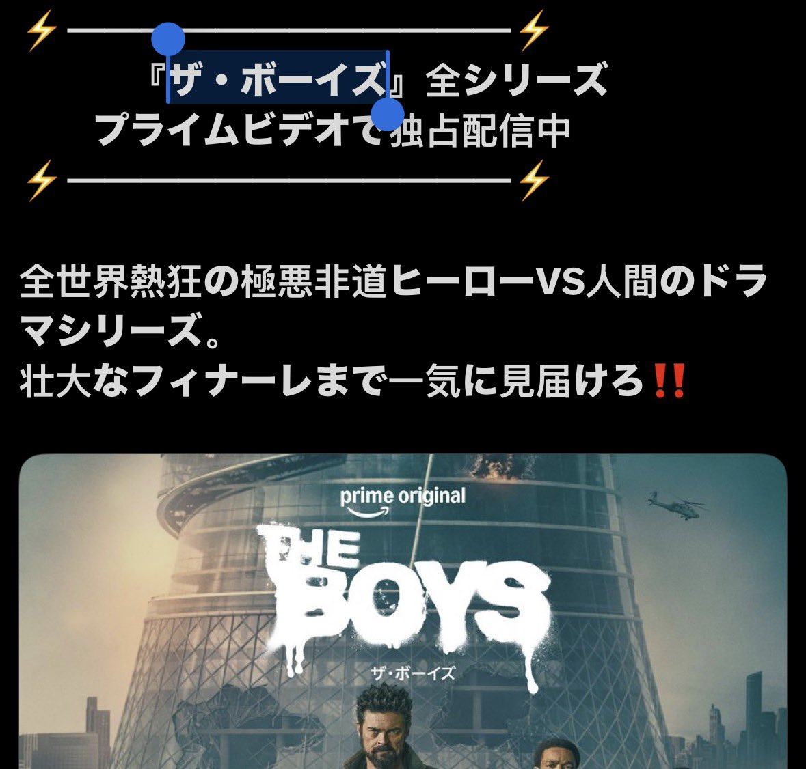

@CyberKanjousen 其实我觉得是一个习惯性问题（加上音译有没有做到信达雅的问题），听到boys音译成鲍伊斯都觉得怪，但hamburger说汉堡就不怪了，hysterics说歇斯底里就更不怪了（甚至很多人不会意识到这词是个音译）。


有人说把「The Boys」译成「ザ・ボーイス」相当于把它译成「泽·鲍伊斯」，所以日语的这种片假名译法相当弱智。環状線认为这种类比并不合适。
汉语中所有汉字都是表意文字，比如中国人看到「泽」，就会想到「水、湖泊」。但日语片假名显然是表音文字，你让一个日本人看到「ザ」，日本人会想到什么？让 https://t.co/sOLzwRNqVt
汉语中所有汉字都是表意文字，比如中国人看到「泽」，就会想到「水、湖泊」。但日语片假名显然是表音文字，你让一个日本人看到「ザ」，日本人会想到什么？让 https://t.co/sOLzwRNqVt